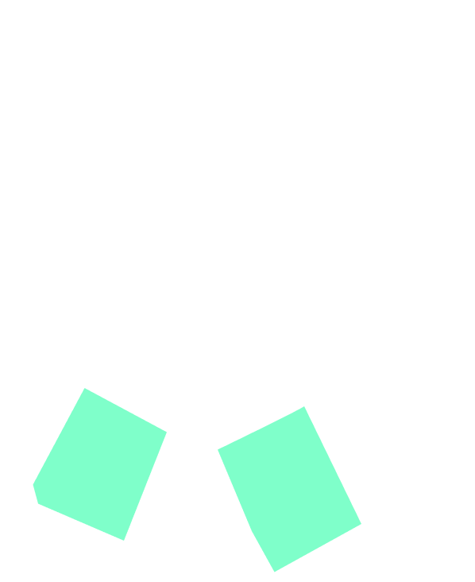
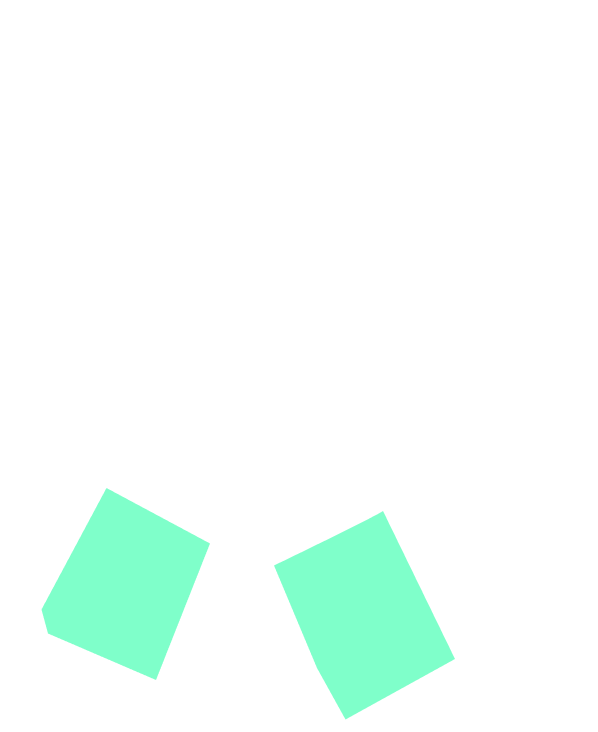

Data-probe 6
23 October 2023 (WS1)
Mendrisio (CH)
Participant 6
She is a researcher, and interaction designer. She coordinates a master's program that integrates design, technology, and maker culture. Her interests include open-source innovation, maker education, and the application of open and interaction design for social impact. As an educator, researcher, and interaction designer. She is one of the supervisor of the PhD research.
Written description:
Not provided
Picture of the probe:

 

List of components:
Oral description:
“So, I made this... it was to hold together but they don't hold. They're leaks, so the white parts are the material, so the variable of the...okay it wasn't...that one there, it was maybe the sheen. But if the brightness, I mean the colour of the urine I don't remember exactly because I can feel it. More than though it alternated with these that my psychological condition OK that every time it appeared the first time little and anyway I had a I was very worried, then they increased. In fact, there's the double triangle and so there was the worry that increasedand then they increased the most and so that was my experience of how to visualize this symptom purchase of white discharge, it was happening... Yes, yes, something was happening se, I stiffen with respect to the situation.”